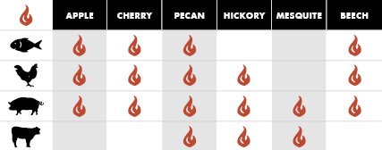

BBQ 101
Is BBQing and grilling the same thing?
No, they are two different methods of cooking. Grilling is ideal for cooking our favorite meat (such as burgers, hotdogs, and steaks) and veggies quickly, using high, direct heat supplied most commonly by ignited propane gas. BBQing on the other hand, is a slow and low method of cooking meat using low, indirect heat. Choice BBQ meat tends to have a higher fat content for flavor and moisture (such as brisket, pork ribs, but also chicken). Skilled BBQ chefs spend decades perfecting their craft of combining choice meats with their signature spice rubs, sauces, wood smoke, and consistent low heat.
How are rubs and sauces applied in the BBQ process?
Using a combination of spice rubs and sauces is key to providing that magical BBQ flavor we all love. Spices are best applied to the meat raw before cooking, and it's important to work in the spices generously. As far as sauces go, here at Sea Smoke, we slather our famous sauce within the last of cook time, and once again as the meat rests before serving.
What kind of wood provides the best flavor?
The most common types of wood used in BBQ to add to the flavor profile are apple, hickory, and cherry wood and can be added directly on top of your charcoal. For quicker BBQ cooking times, chips work great. Recipes requiring longer cook times, wood chunks are recommended. But think of the wood smoke similar to salt and pepper, too much and you can overpower many of the flavors you worked so hard to obtain in the BBQ process.
BBQGuru.com
123 Oak Street, Some City, Some State | (732) xxx-7890 | info@seasmokebbq.com
Sea Smoke Roadside | 2022